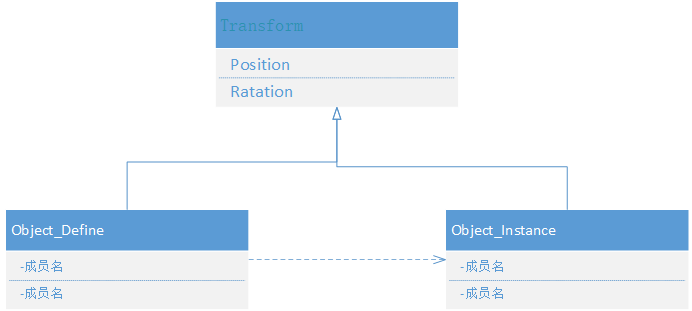
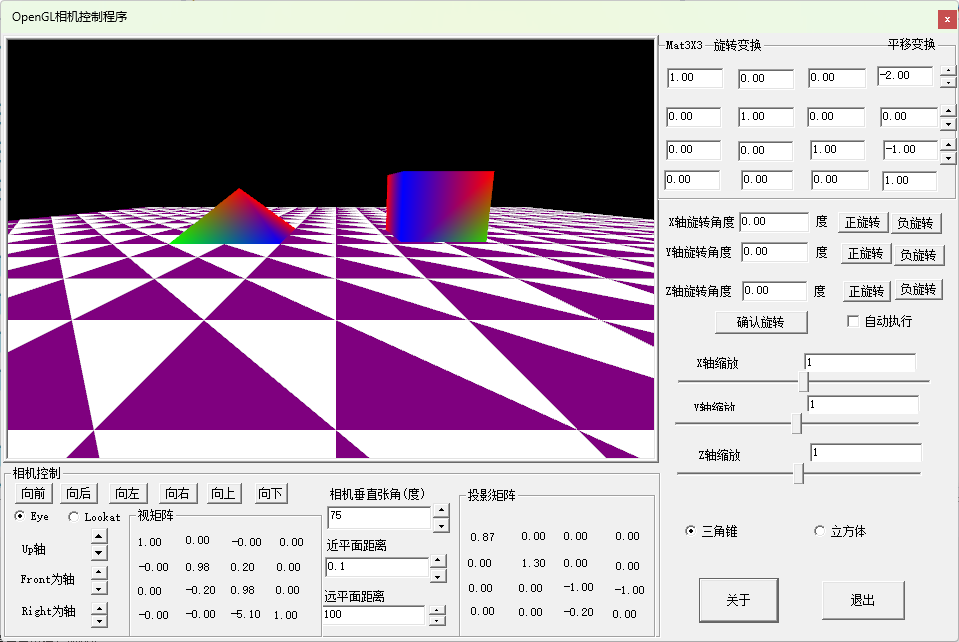

最近看了些文章，感觉OpenGL要逐步退出历史舞台了，各操作系统厂家逐步要求使用Vulkan替代OpenGL作为三维图形系统的基础支持API。我准备尽快转向Vulkan开发讲解三维图形学的理论与实践。Vulkan的学习要求硬件知识和软件编程技能比较高，不适合没有基础的同学，经过认真思考，还是需要把OpenGL关于三维图形学基础部分的例程整理完成，然后在进入Vulkan方面的例程编写。
作者而是几年前从事分布交互式虚拟仿真应用程序的开发，用过几年OpenGVS和VegaPrime。感觉这些专业图形软件设计理念和专业性很值得借鉴，这些图形软件通过很好的封装，基本见OpenGL底层函数调用进行了屏蔽，不需要应用开发人员了解太多的图形学知识和计算方法，使得应用开发人员开发能够专注的进行功能性的开发。近几年有一段时间接触到一个开源的产品(OSG ---OpenSceneGraph )，里面大量的用到C++设计模式，即使有深厚功底的开发人员，入门也需要一定的时间和精力。作者偏向于设计简化，屏蔽过多的技术和算法细节，程序框架清晰稳定，这才是程序员追求的终极目标。本例程专注于“三维应用程序中物体的空间变换”功能的封装，尽量屏蔽复杂的数据计算过程，其原理可通过《三维图形学 openGLDiret3D中变换原理》和《三维图形学刚体的姿态表示及坐标变换原理》两篇文章进行了详细的讲述。本文档主要是讲解作者封装的Transform类，通过Transform类基本将三维图形空间变换的复杂公式进行了屏蔽，用户只需要使用Transform类中的函数就可以完成物体的位置、姿态、缩放的全部操作。
x1/* FileName:Transform.hpp 定义用于坐标变换的基础类22020年1月 刘文庆 开发于河北廊坊 版权所有*/3#ifndef __TRANSFORM_HPP__5#define __TRANSFORM_HPP__6#ifndef __USE_REF_PTR__8#define INHERIT_REF9#else10#include "ref_ptr.hpp"11#define INHERIT_REF :public osg::Referenced12#endif13#include "glad.h"15#include <string>16#include "g_consts.h"17#include "glm/glm.hpp"18#include "glm/gtc/type_ptr.hpp"19#include "glm/gtc/matrix_transform.hpp"20#include "glm/gtc/quaternion.hpp"21#define GLM_ENABLE_EXPERIMENTAL22#include "glm/gtx/euler_angles.hpp"23class Transform INHERIT_REF25{26private:27glm::vec3 m_position = glm::vec3(0.0f,0.0f,0.0f);28glm::quat m_quat = glm::quat(glm::vec3(0.0f, 0.0f, 0.0f));29glm::vec3 m_scale = glm::vec3(1.0f, 1.0f, 1.0f);30public:31Transform() {}32virtual ~Transform() {}33glm::mat4 GetMat()35{36glm::mat4 _mat = glm::mat4x4(1.0f);37_mat *= glm::scale(glm::mat4x4(1.0f), m_scale);38_mat = glm::mat4_cast(m_quat) * _mat;39_mat = glm::translate(glm::mat4x4(1.0f), m_position) * _mat;40return _mat;41}42const glm::vec3& GetScale()43{44return m_scale;45}46void SetScale(const glm::vec3& _vec)47{48m_scale = _vec;49}50const glm::vec3& GetPosition()51{52return m_position;53}54void SetPosition(const glm::vec3& _vec)55{56m_position = _vec;57}58const glm::vec3& GetRotation()59{ // pitch,在glm库中是绕X轴旋转60// yaw, 在glm库中是绕Y轴旋转61// roll 在glm中对应绕Z轴旋转62return glm::eulerAngles(m_quat);//glm库从1.0开始返回弧度数字了63}64void SetRotation(const glm::vec3& _vec)65{//保证旋转顺序为X（pitch），Y（Yaw），Z(roll)66m_quat = glm::quat_cast(glm::eulerAngleXYZ(_vec.x, _vec.y, _vec.z));67}68void MoveAlongVectorDistance(const glm::vec3& _vec, const float& _distance)70{71m_position += glm::normalize(_vec) * _distance;72}73//glm::quat combinedRotation = rotation2 * rotation1;相当于先旋转rotation1，再旋转rotation274void RotateAngle(const glm::vec3& _angle)75{76//m_quat = glm::quat_cast(glm::eulerAngleXYZ(_angle.x, _angle.y, _angle.z))* m_quat;77m_quat = glm::quat(_angle)* m_quat;//相当于先旋转m_quat，再旋转_angle78}79void RotateAngleX(const float& _angle)80{81RotateAngle(glm::vec3(_angle, 0, 0));82}83void RotateAngleY(const float& _angle)84{85RotateAngle(glm::vec3(0,_angle, 0));86}87void RotateAngleZ(const float& _angle)88{89RotateAngle(glm::vec3(0,0,_angle));90}91};93#endif94
作者建议在进行复杂三维应用程序开发过程中，尽量使用智能指针，所以在头文件开始处增加了INHERIT_REF宏定义，作为初学者，为保证程序结构尽可能简化，我们例程没有使用智能指针，所以定义INHERIT_REF宏为空。
Transform类中保存了物体空间属性参数：
glm::vec3 m_position = glm::vec3(0.0f,0.0f,0.0f);//位置参数
glm::quat m_quat = glm::quat(glm::vec3(0.0f, 0.0f, 0.0f));//描述物体姿态参数，我们用四元数表示，更全面
glm::vec3 m_scale = glm::vec3(1.0f, 1.0f, 1.0f);//缩放参数
Transform类提供了对物体进行各种空间变换的函数：
位置函数：GetPosition()、SetPosition
姿态函数：GetRotation()、SetRotation
姿态变换函数：RotateAngle()、RotateAngleX()、RotateAngleY()、RotateAngleZ()；
缩放函数：GetScale()、SetScale()
返回物体空间信息的矩阵函数：glm::mat4 GetMat()
有了Transform类，我们为了使得应用程序结构清晰，建议所有物体类均派生于Transform类，这样每个物体对象就包含了自身的空间信息，可以很方便的对物体进行空间坐标变换了。
知识点： 专业一点的图形开发平台，基本将物体的生成与物体的显示分开设计，一个定义为Object_Define,一个定义为Object_Instance；Object_Instance由Object_Define生成。Object_Define与Object_Instance类均派生于Transform类，这样就可以很好的使用两套变换矩阵对物体进行变换了，由资料谈到Unity3D中关于物体的内旋和外旋实际上就是这样定义的。其结构图如下：

为了简化起见，我们没有定义Object_Define,直接定义物体的Instance类，下面是重新定义的三角锥和立方体类：
x1class Tetrahedron : public Transform2{3VAOWithVBOandEBO m_TriangularPyramids;4public:5Tetrahedron()6{7}9~Tetrahedron()10{11}13void InitializeData()14{15m_TriangularPyramids.AddVBOandEBO(16{ triangularvertdata ,triangularcolordata },17{ 12,12 }, BufferUsageHint::StaticDraw,18{ {3},{3} },19std::vector<GLuint>(triangularindicedata, triangularindicedata + 12));20}21void Draw()22{23m_TriangularPyramids.DrawElements(PrimitiveType::Triangles, 12);24}25void Draw(Camera& _camera, Shader& _shader)26{27_shader.Use();28_shader.SetMat4("ProjectionMatrix", _camera.GetProjectionMat());29_shader.SetMat4("ViewMatrix", _camera.GetViewMat());30glm::mat4x4 _modelMat = this->GetMat();31_shader.SetMat4("ModelMatrix", GetMat());32m_TriangularPyramids.DrawElements(PrimitiveType::Triangles, 12);33_shader.UnUse();34}35};
x1class CubeObjectWithColor : public Transform2{3VAOWithVBOandEBO m_VaoWithVBOandEBO;4public:5CubeObjectWithColor()6{7}9~CubeObjectWithColor()10{11}13void InitializeData()14{15m_VaoWithVBOandEBO.AddVBOandEBO(16{ cubevertdata ,cubecolordata },17{ 24,24 }, BufferUsageHint::StaticDraw,18{ {3},{3} },19std::vector<GLuint>(cubeindicedata, cubeindicedata + 36));20}21void Draw()22{23m_VaoWithVBOandEBO.DrawElements(PrimitiveType::Triangles, 36);24}25void Draw( Camera& _camera, Shader& _shader)26{27_shader.Use();28_shader.SetMat4("ProjectionMatrix", _camera.GetProjectionMat());29_shader.SetMat4("ViewMatrix", _camera.GetViewMat());30glm::mat4x4 _modelMat = this->GetMat();31_shader.SetMat4("ModelMatrix", GetMat() );32m_VaoWithVBOandEBO.DrawElements(PrimitiveType::Triangles, 36);33_shader.UnUse();34}35};
注意：这两个类中我们重新设计了Draw函数，添加了两个参数：
void Draw( Camera& _camera, Shader& _shader)；这样就可以将物体的变换过程封装到了类对象内部，程序结构就清晰多了。
为了增加三维场景的立体感，本历程我们见地面横线和竖线整合为三角形网格，其代码如下：
xxxxxxxxxx1531class Terrain2{3VAOWithVBOandEBO m_terrain;4int m_VertexNum=(10-(-10))* (10 - (-10))*6;5public:6Terrain()7{8}10~Terrain()11{12}14void InitializeData()15{16float *tempVertex = new float[6*20*20*6];17int k = 0;18for (int i = -10; i < 10; i++)19{20for (int j = -10; j < 10; j++)21{22//023tempVertex[k++] = i;tempVertex[k++] = 0.0f;tempVertex[k++] = j;24tempVertex[k++] = 1.0f;tempVertex[k++] = 1.0f;tempVertex[k++] = 1.0f;26tempVertex[k++] = i + 1.0f;tempVertex[k++] = 0.0f;tempVertex[k++] = j + 1.0f;28tempVertex[k++] = 1.0f; tempVertex[k++] = 1.0f;tempVertex[k++] = 1.0f;29tempVertex[k++] = i + 1.0f;tempVertex[k++] = 0.0f;tempVertex[k++] = j;30tempVertex[k++] = 1.0f; tempVertex[k++] = 1.0f;tempVertex[k++] = 1.0f;31//132tempVertex[k++] = i;tempVertex[k++] = 0.0f; tempVertex[k++] = j + 1;33tempVertex[k++] = 0.5f;tempVertex[k++] = 0.0f;tempVertex[k++] = 0.5f;34tempVertex[k++] = i + 1;tempVertex[k++] = 0.0f;tempVertex[k++] = j + 1;36tempVertex[k++] = 0.5f; tempVertex[k++] = 0.0f;tempVertex[k++] = 0.5f;37tempVertex[k++] = i; tempVertex[k++] = 0.0f;tempVertex[k++] = j;39tempVertex[k++] = 0.5f; tempVertex[k++] = 0.0f;tempVertex[k++] = 0.5f;40}41}42m_VertexNum = k / 6;43m_terrain.AddVBO({ tempVertex }, { k }, BufferUsageHint::StaticDraw, { { 3,3 } } );45delete[] tempVertex;46}47void Draw()48{49m_terrain.DrawArrays(PrimitiveType::Triangles, 0, m_VertexNum);51}52};53
本历程程序运行结果如下：工程文件为：WinOpenGL3D_ControlObject.zip

希望你能够学到一定的编程知识。